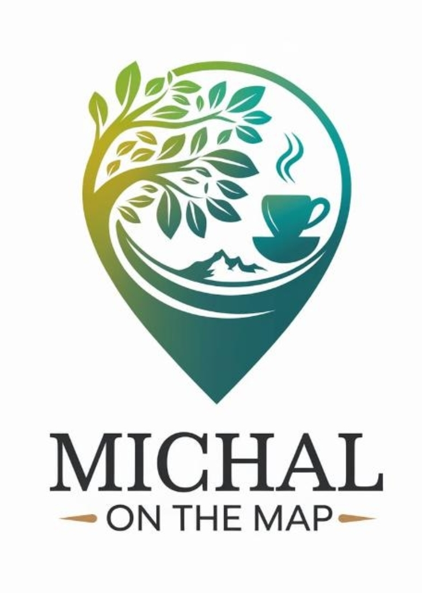

🗺️
מיכל על המפה
מסעדות · קפה · בוטיק
🔍
✕
הכל
ירושלים
מרכז
צפון
דרום
איו"ש
כל המקומות
עוד לא ביקרנו
✓ ביקרנו
🔵 בקרוב
⭐ מועדפים
0
מקומות
0
ביקרנו
0
לגלות
0
מועדפים
לא נמצאו מקומות 🌿
נסי מילה אחרת
＋
רשימה
גיבוי
➕ הוספת מקום חדש
שם המקום *
אזור *
בחרי אזור
ירושלים וסביבתה
מרכז, שרון ושפלה
צפון, חיפה והעמקים
דרום ונגב
יהודה ושומרון
עיר / ישוב
סוג מקום
בחרי סוג
מסעדה
בית קפה
עגלת קפה
קונדיטוריה
גלידה
יקב
אטרקציה / טבע
אחר
כשרות
לא צוין
כשר
מהדרין
לא כשר
חלבי
מיקום / כתובת
קישור לסרטון YouTube
הערות
שמירה
🗑️ מחיקת מקום
💾 גיבוי ושחזור
ייצוא לקובץ גיבוי (JSON)
ייבוא מקובץ גיבוי
כל המקומות, הסימונים, המועדפים והקישורים נשמרים.
שלחי את הקובץ לעצמך בווטסאפ לגיבוי בטוח.